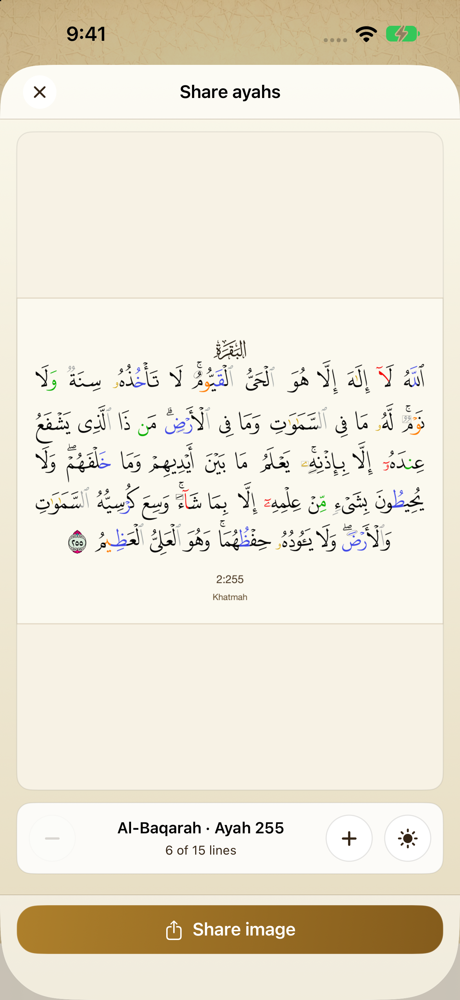

Read in a way that suits you.
A familiar page and a focused reading view help you stay with the text.
Read the Quran, keep your place, and continue your khatma at your own pace.
Download on the App StoreFree for iPhone · iOS 17 or later
Familiar Mushaf reading

Your place, saved locally
A familiar page and a focused reading view help you stay with the text.
Keep track of khatmas and return to saved places whenever you’re ready.
For the upcoming release: a dark reading theme, a landscape focus view, and a way to share an ayah as an image.



Free for iPhone · iOS 17 or later